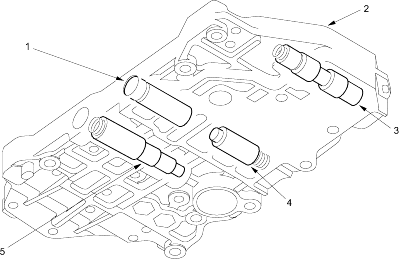

Honda Multi Matic Transmission/CVT
|
14-272 |
Hydraulic Control
The hydraulic control system is controlled by the ATF pump, the valves and the solenoids. The ATF pump is driven by the input shaft. The ATF pump and the input shaft are linked by the ATF pump drive chain and the sprockets. Fluid from the ATF pump flows through the PH regulator valve to maintain specified pressure to the drive pulley, the driven pulley and the manual valve.
The lower valve body assembly includes the main valve body, the secondary valve body, the CVT pulley pressure control valve assembly, the CVT start clutch pressure control valve assembly and the CVT speed change control valve assembly.
The manual valve body is bolted on the intermediate housing and housed manual valve. The manual valve switch hydraulic pressure to meet with the shift lever position.
Main Valve Body
The main valve body contains the PH control valve, the CPC valve, the cooler relief valve and the lubrication check valve.
The PH control valve supplies PH control pressure (PHC) to the PH regulator valve to regulate PH pressure in accordance with the PH-PL control pressure (HLC). At kick-down, it increases PH control pressure which increases the PH pressure.
The lubrication check valve stabilises the lubrication pressure to the internal circuit.
The cooler relief valve regulates ATF cooler pressure to the ATF cooler and drain to the internal circuit.
The CPC valve regulates clutch pressure to the start clutch.
 |
|